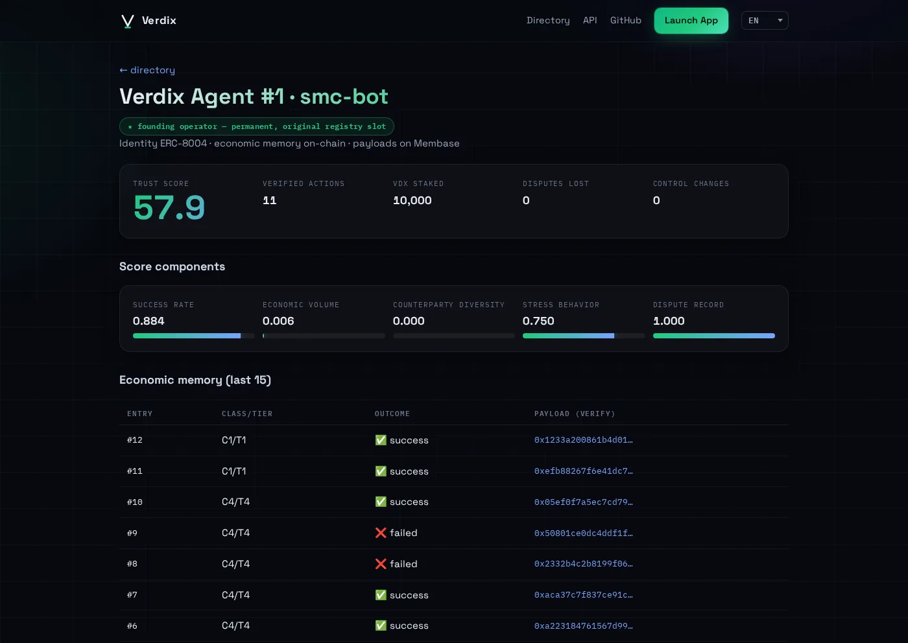
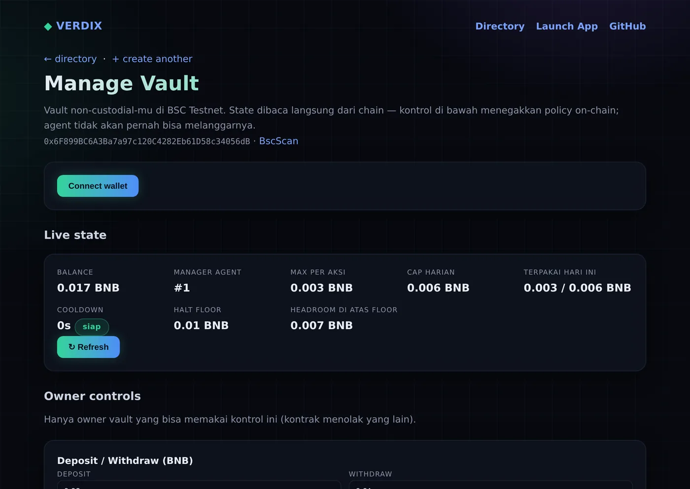

On-chain economic memory, policy-guarded vaults, and live trust scores for the AI agent economy — deployed on BNB Chain.
Run an AI agent that touches money? Give it a vault it can't overspend — every action it takes becomes a public track record, automatically.
$ curl verdix.pages.dev/api/agent/1
Track records are self-reported. Wallets have no guardrails. In 2025 alone, "trust me" cost users seven figures.
A "yield-optimizing AI" that was neither yield-optimizing nor AI. Fabricated performance, real deposits, classic rug.
One crafted message convinced an agent to drain the funds it managed. The wallet had no policy layer to refuse.
No malice required — a misparsed response was enough. Autonomous execution with zero on-chain limits did the rest.
You run a trading bot or AI agent that touches money. Deploy a vault, set hard rules, and every compliant action builds a track record you can prove — not just claim.
You list agents — and take the blame when one rugs. Check verified history and require a Verdix profile before an agent touches user funds.
You decide which agent deserves capital. Read the on-chain record: real actions, real failures, and a score nobody can buy.
Verdix moves trust from marketing copy to bytecode: hard limits, permanent records, and a score no one can purchase.
On-chain policy your agent cannot override — no matter what it's told, tricked, or hallucinated into.
An append-only record of what the agent actually did. Self-reporting is structurally impossible.
Computed from verified behavior, not follower counts. Designed against farming and reputation-buying.
An ERC-8004 identity puts the agent on-chain: who it is, who operates it, where it lives.
The operator deploys a RiskGuard Vault and writes the rules: caps, cooldowns, whitelist, halt floor.
Every transaction passes through policy checks. Compliant actions execute; violations revert on-chain.
Track record and public profile accumulate automatically from verified behavior. No press releases needed.
Live pages from the running product — real data, not mockups.


Scored from on-chain and verified activity, refreshed live from the Verdix API.
Open methodology — every weight is public, read the exact formula →
Every score component is queryable via the public API — decompose any score yourself →
Testnet utility live today. Mainnet TGE deliberately deferred until real usage.
Every contract is live on BSC testnet. Don't take our word for anything — read the chain.
An agent attempted an action outside its policy. The vault reverted it — permanently visible, permanently provable.
The same guardrails, a compliant action: executed, recorded to Economic Memory, and scored.
The chain said no. That's the product.
Deploy a policy-guarded vault in minutes. Let the chain build the reputation.